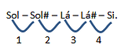
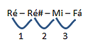

Um tom é uma distância de dois sustenidos (ou de dois bemóis).
Um semitom é uma distância de um sustenido (ou de um bemol). Por exemplo, a distância entre dó e ré é de um tom, pois entre dó e ré há uma distância de dois sustenidos (de dó para dó# e de dó# para ré). Simples, não?! Para ficar ainda mais claro, nada melhor do que uns exercícios:
Qual a distância entre as notas sol e si? Vamos conferir quantos sustenidos (semitons) há entre sol e si:
Logo, há 4 sustenidos de distância, totalizando 2 tons. Agora que você já sabe dizer a distância entre as notas, tente encontrar a distância entre ré e fá. Depois confira abaixo.
Logo, a distância é de um tom e meio.
Obs: um tom e meio = um tom + um semitom.
Nos instrumentos: violão, guitarra, baixo, cavaquinho, ukulelê, entre outros, cada casa do braço do instrumento corresponde a um semitom.